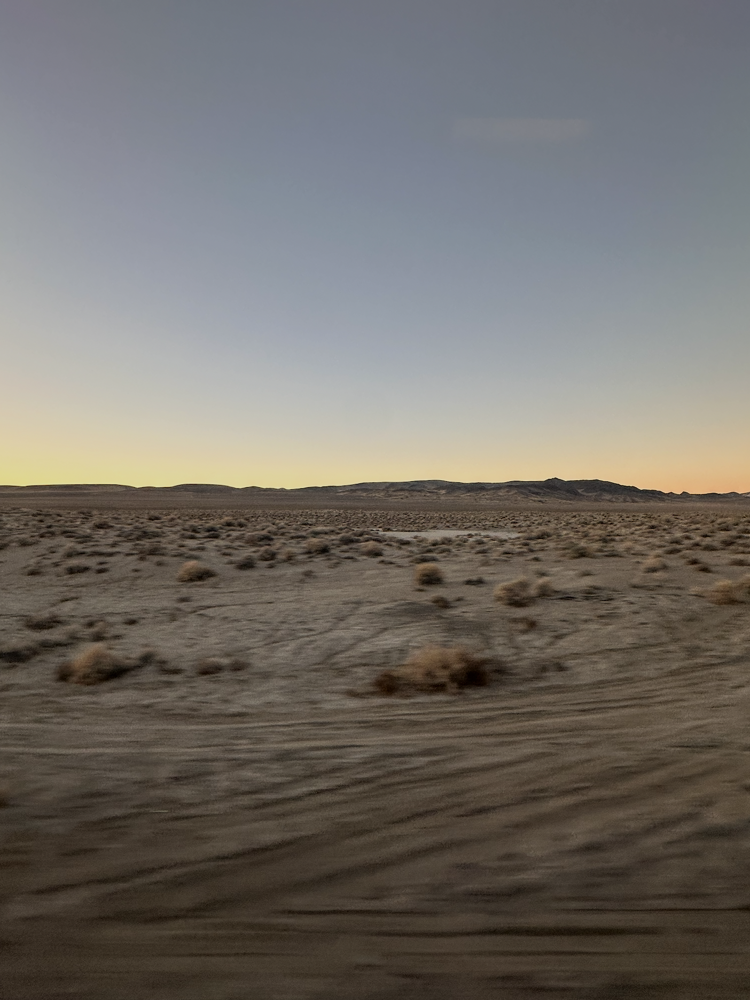
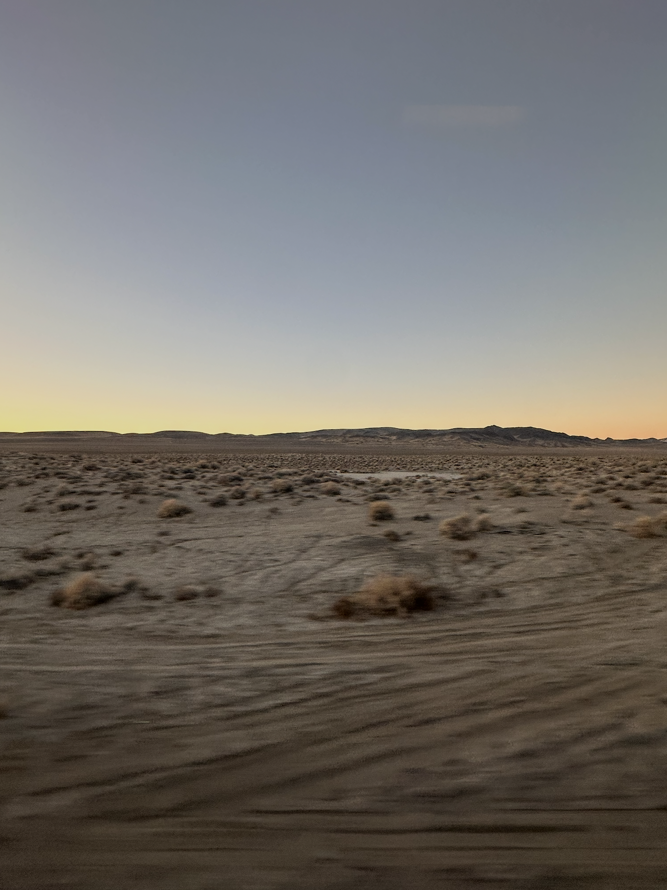

Exploring America on Rails
In the fall of last year, I embarked on a breathtaking journey aboard the Amtrak Zephyr from San Francisco to Chicago. The 52-hour ride took me through stunning landscapes, ranging from the Sierra Nevada to the vast Utah deserts, and into the heart of Colorado’s Rocky Mountains. Each moment was a new perspective on America’s vast natural beauty.
Highlights of My Journey
- Donner Pass, California - Snow-capped peaks and breathtaking mountain views.
- Sierra Pines, Nevada - A peaceful view with a peaceful river, and golden hills under a clear blue sky.
- Desert of Nevada - An awe-inspiring, arid landscape under the sunrise.
- Desert of Utah - Vast open spaces with red rock formations.
- Parshall, Colorado - Rolling hills and hidden valleys.

 
